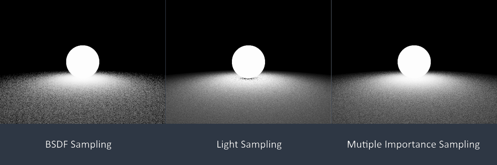

前文提到当光源和物体表面材质都接近分布时，无论是在光源上采样还是按BSDF采样都可能带来很高的方差。本文讨论一种能很好地改善该问题的技术——多重重要性采样。
我们常常需要通过采样来估计某个已知部分结构特征的函数的积分（比如，但函数的具体值却又严重依赖于一组额外的参数，这导致我们很难在未知参数的情况下设计出一个足够好的采样策略。举个例子，基于光线追踪的离线渲染中每条路径上辐射值的系数都是一系列因子的乘积，如果仅仅按照其中某一个来采样（如在光源上采样，或是按BSDF采样等等），那么当其他未被该采样方法考虑的因子对乘积结果的形态有显著影响时，就会产生较高的方差，亦即较低的图像质量。
多重重要性采样（multiple importance sampling，MIS）的思路是结合多种不同的采样方法，分别采样被积函数的不同部分，并将这些采样点结合起来，以达到接近于最优采样的结果。
多采样模型（The multi-sample model）
给定待求值的积分：
和种不同的上的采样策略，其概率密度函数分别记为。假设已经实现了以下操作：
- 给定，可以求出和。
- 对任意，可以按其分布生成一个样本。
现假设我们已经决定了用，来采样个样本，于是总采样数为。记用第个策略采样得到的第个样本为。现在的主要目标是用一种保证无偏的方式来结合所有的。考虑给每个采样策略赋予一个权重函数，则多采样估计量可以被写作：
要保证是无偏的，以下两个条件必须被满足：
- 。
- 。
基于这两点容易给出以下推论：对任意满足的，至少存在某个使得，即对的每个非零点，至少要有一个能采样到它。
Lemma. 若和满足上面的两个无偏条件，且，则：
Proof.
The balance heurostic
多采样模型给出了一个巨大的无偏估计量空间以及在形式上高度统一的表示方式，我们的目标是找到合适的以得到具有最小方差的。
Theorem. 令：
若使用作为权重函数，是使用另一组权重函数的多采样估计量，是被估值量，则：
这一定理表明无论如何都是一个相当不错的权重函数——存在比它更好的，但不会有远胜过它的。
现在把代入中，得到：
如果把上式进一步改写——
这就得到了一个在形式上非常标准的蒙特卡洛估计量。被称为组合采样密度函数（combined sample density），是某个样本点在全部个采样点意义上的概率密度。
综上，我们得到了以下采样算法：
function BALANCE-HEURISTIC(f, p, n)
F = 0
N = n_1 + n_2 + ... + n_n
for i = 1 to n
for j = 1 to n_i
X = TakeSample(p_i)
hp = 0
for k = 1 to n
hp += n_k * p_k(X) / N
F += f(X) / hp
return F / N
在路径追踪中的应用
估计量
像路径追踪这样有节操的算法是不会在某一条路径的某个点处采样多次的，每次出发它都一条路走到底，只不过要出发很多次罢了。因此，将上面的MIS转换为采样单个点的形式是有必要的。
考虑计算直接光照的方程（方程来源和符号含义参见前文）：
面对此式，常用的采用策略是按采样（即所谓的BSDF采样）和将采样域变换到光源表面上按采样（即所谓的光源采样）。若是使用前一种方法，则当光源分布对结果影响较大时，噪点会非常明显；按后一种策略，则当BSDF描述的是光滑的表面（近乎镜面）时，图像质量也会较差。
现在考虑用重要性采样将这两种采样策略结合起来。设想以的概率选用BSDF采样策略，以的概率选用光源采样策略，BSDF策略以概率密度采样得到，光源策略以概率密度采样得到。令，则估计量是：
验证
稍微验证一下，设表示从出发沿方向的射线与全体表面的最近交点，则：
令：
对每个，都一定存在一个使得，于是:
若规定上式积分内的式子在为零时也为零，就可以上述积分的积分域扩展到上，得到：
将此式代入，得到：
这就验证了是的无偏估计量。结合前文的内容，辐射值的单采样估计量是：
这就是实现带有多重重要性采样的PathTracer时需要抄的公式了。当然，这只是在计算直接光照时使用了MIS，我（也许）会在以后逐步讨论更广泛的应用。
为什么需要单独处理Specular表面
在前文对直接光照的讨论中，遇到Specular表面时需要完全用BRDF进行采样，那是因为在光源上采样会无法命中Specular表面的散射分布上的非零点。而本文讨论MIS技术号称能融合多种采样策略，只要每个点被至少一种策略覆盖即可，对Specular表面而言，其BSDF采样无疑就是一种覆盖了散射分布的采样策略，那为什么在上面的估计量中还需要单独处理Specular表面呢？
Corner case是谁都不喜欢的，因此这里引入对Specular表面的单独处理也是迫不得已——我们根本无法正确地按蒙特卡洛估值技术来采样Specular表面，即使是朴素的路径追踪算法的处理也带有一定的trick性质，MIS要在这里发挥作用就更是无稽之谈了。试考虑某个理想镜面，反射颜色为，设其法线为，入射方向为，则反射方向为：
于是BSDF为：
BSDF采样所使用的概率密度函数则是：
再看看算法中按照BSDF采样的代码：
// struct BSDFSample {
// Spectrum color;
// Vec3 phi;
// float pdf;
// };
BSDFSample sample = bsdf.Sample();
Spectrum t = RecursivelyTrace(NewRay(pos, phi));
Spectrum ret = t * sample.color * Dot(normal, sample.phi) / sample.pdf;
试问：如何用BSDFSample::color和BSDFSample::pdf表示函数的取值？这当然是不可能的，所以实践中一般把pdf设为，把color设为，使得最后sample.color/sample.pdf的值保持不变。
而MIS却把sample.color/sample.pdf给拆解开来，在其中插入了别的量，此时这个trick会导致错误的结果。这就是我们尽管引入了MIS技术，还是得单独处理Specular表面的原因。当然，如何用编程技巧正确地处理分布，以去掉这个corner case，就是与本文无关的另外一个问题了。
实现
实现代码可以在这里中的PathTracer.h/cpp找到。随便摆个场景看看——

最左边的是按BSDF进行100spp采样（也就是前文最开始用的方案）的结果，在稍微远离光源的地方惨不忍睹，这是意料之中的；中间的是前文给出的PathTracerEx2的结果，在靠近光源的地方由于无法有效地采样光源产生了很严重的噪声；最右侧的则是本文所讨论的MIS技术应用的结果，它在很难有效采样光源的地方没有产生很高的方差，在远离光源的地方表现也还不错。应该说，在每一种特定的情境下，都存在比MIS更好的采样策略，但当各种情境齐聚一堂时，MIS能够集各家之所长，得到一个满意解（而未必是最优解）。
当然，上图中光源采样造成的噪点可以通过改善光源采样策略来消除，因此这不算是个很好的显示MIS优越性的例子。在后续文章中，我会引入一些光泽感较强的材质，那时MIS才可一鸣惊人。